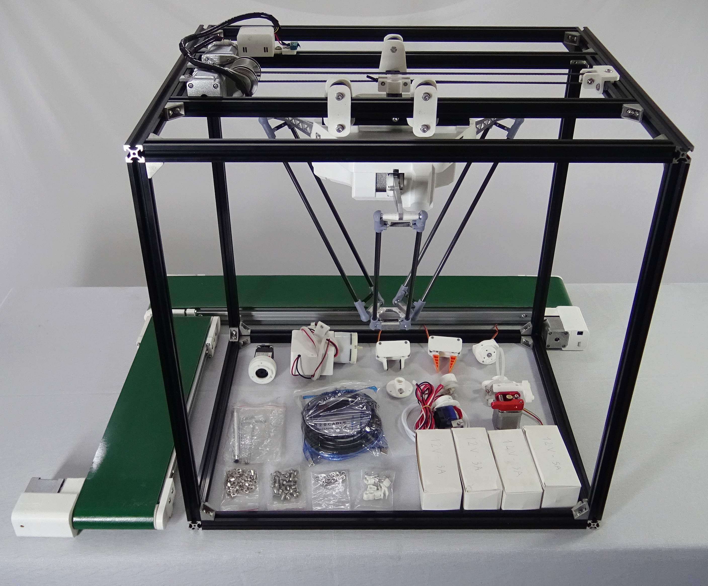
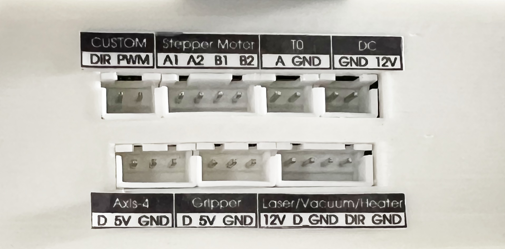
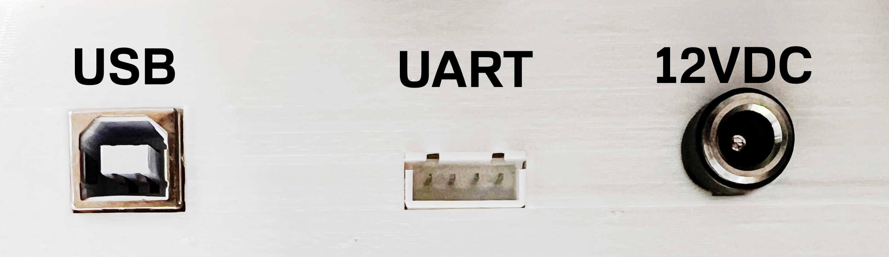
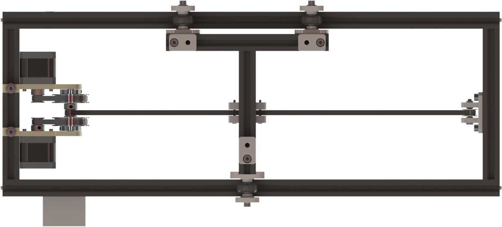
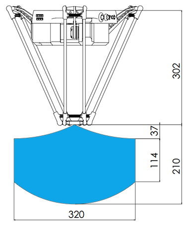
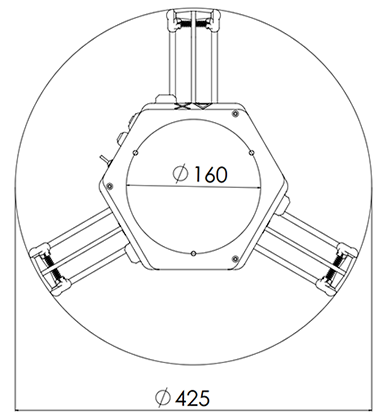
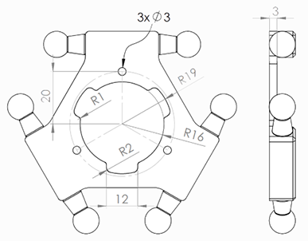

Delta X 2 Develop Kit¶
Cost: $1249¶
Purchase Now¶

Delta X 2 Develop Kit provide you all the things you’ll need to build an automative station. It’s suitable for teaching, research, testing or even a small manufactory line.
Components¶
Let see what we have in a Delta X 2 Develop Kit:
- Delta X 2 Robot.
- Axis 4.
- All kind of End Effector:
- Pen holder & Touch Pen.
- Single/double Sucction cup & Air Pump.
- Hard Gripper.
- Soft Gripper.
- 3D Printing Kit (Extruder Stepper, Hot End kit, teflon tub).
- Aluminium profile frame (620x480x620mm).
- Slider X.
- Short conveyor.
- Long conveyor.
- Power Supply: 1x 12V-5A, 3x 12V-3A.
- Cables: 1x USB-B Cable, 3x USB to TTL.
- Tool (Hexagon Wrenchs, Bolts, Nuts, Washers, Wire Keepers).
Basic Paramemters¶
| Parameters | Specifications |
|---|---|
| Working space | D = 320 mm, H = 200mm |
| Max payload | 700g |
| Max speed | 800 mm/s |
| Max accel | 20000 mm/s2 |
| Pose repeatability | ±0.15 mm |
| Position accuracy | ±0.15 mm |
| Number of axes | 3/4 |
| Power supply | 12VDC - 5A |
| Weight | 4kg |
Electrical Parameters¶
| Components | Specifications |
|---|---|
| Controller Board | Delta X 2 Board (ARM Cortex-M3) |
| Communication | USB, UART, Bluetooth, Wifi |
| Input | 1 analog input(temp sensor) |
| Output | Stepper/Laser/Vacuum/Axis-4/Gripper |
Mechanical materials¶
| Part | Materials |
|---|---|
| Upper Arm | Aluminum plate |
| Lower Arm | Carbon fibre tube |
| Base frame | Aluminum profile |
| Moving base | Aluminum |
| Motor mounted | Aluminum |
| Body cover | 3D printed (PLA) |
Wiring and Pinout¶
Pinout¶

Delta X 2 Robot has multiple port for different end effectors. The port is located on a side of robot body. Includes:
- 1 Laser/Vacuum/Heating Port
- 1 Gripper Port
- Axis 4 Port
- 1 Stepper Motor Port for 3D Printing
- 1 Thermistor Port
- 12VDC Power Supply Port
- 1 Custom Port
Communication Ports and Power Supply¶

The robot has a USB-B port and a UART port for communication. The USB-B port is used for programming and debugging. The UART port is used for communication with other devices. The robot can be powered by a 12VDC power supply with minimum 5A current.
Conveyor X Parameters¶

| Parameters | Infors |
|---|---|
| Length | 500/1000mm (Short/Long) |
| Width | 120mm |
| Max speed | 800 mm/s |
| Max accel | 20000 mm/s2 |
| Accuracy | ±0.15 mm |
| Connection | USB to TTL |
| Control | G-CODES/Potentiometer |
| Power supply | 12VDC - 3A |
| Weight | 2kg |
Slider X Parameters¶

| Parameters | Infors |
|---|---|
| Working Length | 300mm |
| Max speed | 80 mm/s |
| Max accel | 900 mm/s2 |
| Accuracy | ±0.15 mm |
| Connection | USB to TTL |
| Control | G-CODES/Potentiometer |
| Power supply | 12VDC - 3A |
| Weight | 2kg |
Robot Dimensions¶
Working Space¶

Safe Working Area¶

Moving Base Dimensions¶

Video Tutorials¶
Watch the video below to know how to assemble
Delta X 2 Develop Kit.
Contact Us¶
- Store: https://deltaxstore.com
- Website: https://www.deltaxrobot.com
- Email: deltaxrobot@gmail.com
- Phone: +84 38 875 2005